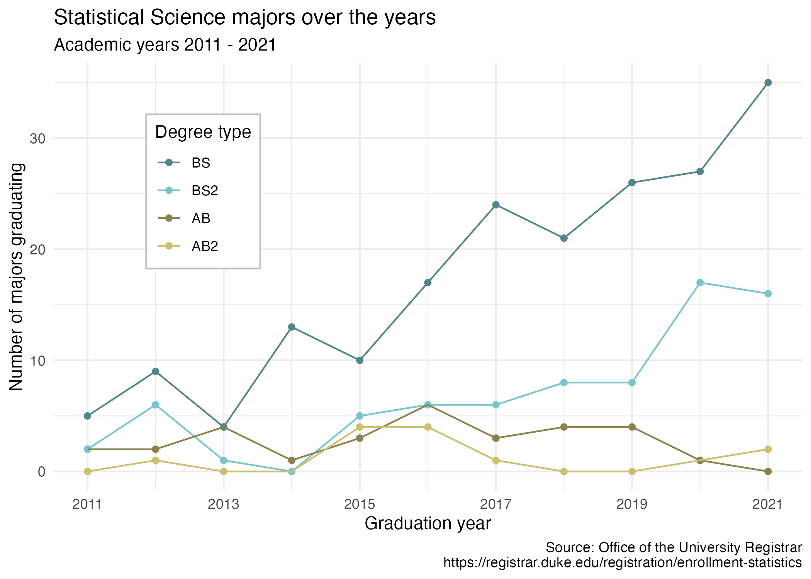
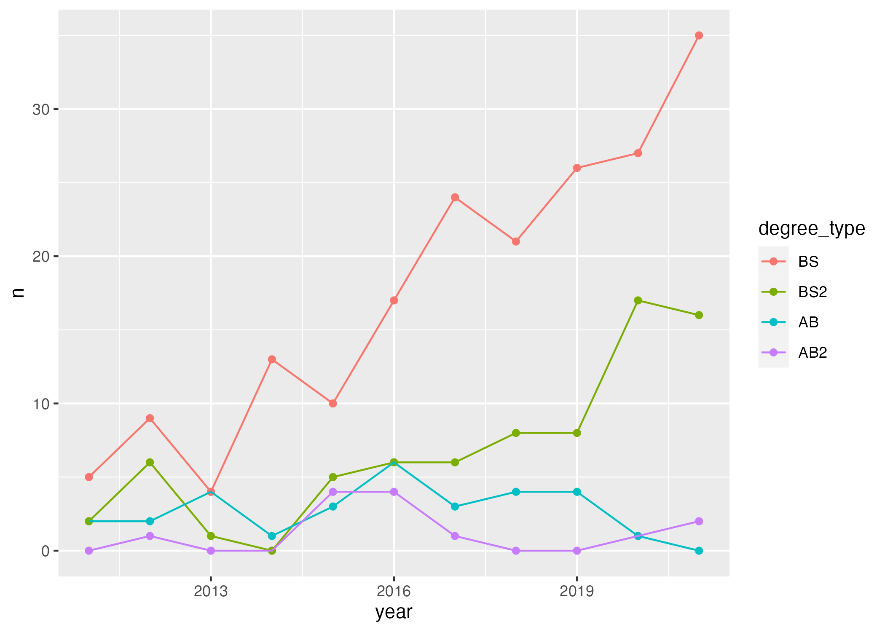

mtcars |>
ggplot(
aes(x = mpg, y = wt)
) +
geom_point()AE 06: Suggested Answers
Application exercise
Debegguing
The questions are left unanswered so you can practice. The solutions are at the end of the document.
In this activity, we will go over how to identify and fix common coding errors. This demonstration will use the mtcars data set. In each of these code chunks, you will either need to add or alter code in order to get it running. Please take notes and treat this AE as a “common errors debugging sheet” to use in the future. There will only be one error per code chunk.
- First, let’s make a quick exploratory plot to assess these data.
Error -
Fix -
mtcars |>
ggplot(
aes(x = mpg, y = gears)
) +
geom_point()Error -
Fix -
mtcars |>
ggplot(
aes(x = mpg, y = wt) +
geom_point()Error -
Fix -
mtcars |>
ggplot(
aes(x = mpg, y = gear)
) +
geom_bar()Error -
Fix -
mtcars |>
filter(mpg > 17)
mtcars.new |>
ggplot(
aes(x = mpg, y = wt)
) +
geom_point()Error -
Fix -
mtcars
|>
ggplot(
aes(x = mpg, y = wt)
) +
geom_point()Error -
Fix -
p <- mtcars |>
mutate(cyl = factor(cyl)) |>
ggplot(
aes(x = mpg, y = wt, color = cyl)
) +
geom_point()
p + scale_color_viridis_c()Error -
Fix -
mtcars |>
mutate(cyl = factor(cyl)) |>
ggplot(
aes(x = mpg, y = wt color = cyl)
) +
geom_point() Error -
Fix -
HW-1 Demo
The following code has multiple errors. Let’s fix the code to the point where we make the following graph:

Strategies:
Don’t diagnose all errors at once
Go line by line
Hint: There are four total errors in the code below.
library(openintro)
duke_forest |>
mutate(garage = if_else(str_detect("Garage"), "Garage", "No garage")) |>
ggplot(aes(x = "price", fill = garage)) +
geom_histogram() +
facet_wrap(garage, ncol = 1) +
labs(
x = Price in $,
y = "",
title = "Histogram of Price of Homes by Garage or not",
fill = "Garage or not"
)Answers
- Need to library tidyverse
- Variable spelled incorrectly
- Need to match up ()
- Does not take argument x and y
- Must define new data set
- Don’t have pipe on own line
- _c is for continous variable. We need _d
- Missing ,
- str_detect is missing
parkingvariable. Need to specify which variable to search in Do not need quotes on variable name Need quotes on x axis facet_wrap needs ~ before variable
Pivoting StatSci Majors
Packages
Goal
Our ultimate goal in this application exercise is to make the following data visualization.

Data
The data come from the Office of the University Registrar. They make the data available as a table that you can download as a PDF, but I’ve put the data exported in a CSV file for you. Let’s load that in.
The first column (variable) is the degree, and there are 4 possible degrees: BS (Bachelor of Science), BS2 (Bachelor of Science, 2nd major), AB (Bachelor of Arts), AB2 (Bachelor of Arts, 2nd major). The remaining columns show the number of students graduating with that major in a given academic year from 2011 to 2021.
- Your turn (3 minutes): Take a close look at the plot and describe what it shows in 2-3 sentences.
Add response
Data In
statsci <- read_csv("data/statsci.csv")Rows: 4 Columns: 13
── Column specification ────────────────────────────────────────────────────────
Delimiter: ","
chr (1): degree
dbl (12): id, 2011, 2012, 2013, 2014, 2015, 2016, 2017, 2018, 2019, 2020, 2021
ℹ Use `spec()` to retrieve the full column specification for this data.
ℹ Specify the column types or set `show_col_types = FALSE` to quiet this message.And let’s take a look at the data.
glimpse(statsci)Rows: 4
Columns: 13
$ id <dbl> 1, 2, 3, 4
$ degree <chr> "Statistical Science (AB2)", "Statistical Science (AB)", "Stati…
$ `2011` <dbl> NA, 2, 2, 5
$ `2012` <dbl> 1, 2, 6, 9
$ `2013` <dbl> NA, 4, 1, 4
$ `2014` <dbl> NA, 1, NA, 13
$ `2015` <dbl> 4, 3, 5, 10
$ `2016` <dbl> 4, 6, 6, 17
$ `2017` <dbl> 1, 3, 6, 24
$ `2018` <dbl> NA, 4, 8, 21
$ `2019` <dbl> NA, 4, 8, 26
$ `2020` <dbl> 1, 1, 17, 27
$ `2021` <dbl> 2, NA, 16, 35slice(statsci)# A tibble: 4 × 13
id degree `2011` `2012` `2013` `2014` `2015` `2016` `2017` `2018` `2019`
<dbl> <chr> <dbl> <dbl> <dbl> <dbl> <dbl> <dbl> <dbl> <dbl> <dbl>
1 1 Statisti… NA 1 NA NA 4 4 1 NA NA
2 2 Statisti… 2 2 4 1 3 6 3 4 4
3 3 Statisti… 2 6 1 NA 5 6 6 8 8
4 4 Statisti… 5 9 4 13 10 17 24 21 26
# … with 2 more variables: `2020` <dbl>, `2021` <dbl>Write a sentence using inline code that shares the number or rows and columns in these data.
These data have 4 rows and 13 columns.
-
Your turn (4 minutes): Take a look at the plot we aim to make and sketch / think about the data frame we need to make the plot. Determine what each row and each column of the data frame should be. Hint: We need data to be in columns to map to
aesthetic elements of the plot.
Add response
Pivoting
-
Demo: Pivot the
statscidata frame longer such that each row represents a degree type / year combination andyearandnumber of graduates for that year are columns in the data frame.
Explain why the following code below accomplishes the question above.
statsci |>
pivot_longer(
cols = !c(degree,id),
names_to = "year",
values_to = "n"
) # A tibble: 44 × 4
id degree year n
<dbl> <chr> <chr> <dbl>
1 1 Statistical Science (AB2) 2011 NA
2 1 Statistical Science (AB2) 2012 1
3 1 Statistical Science (AB2) 2013 NA
4 1 Statistical Science (AB2) 2014 NA
5 1 Statistical Science (AB2) 2015 4
6 1 Statistical Science (AB2) 2016 4
7 1 Statistical Science (AB2) 2017 1
8 1 Statistical Science (AB2) 2018 NA
9 1 Statistical Science (AB2) 2019 NA
10 1 Statistical Science (AB2) 2020 1
# … with 34 more rows-
Question: What is the type of the
yearvariable? Why? What should it be?
It’s a (categorical/quantitative) variable since the information came from the columns of the original data frame and R cannot know that these character strings represent years. The variable type should be (categorical/quantitative).
- Demo: Start over with pivoting, and this time also make sure
yearis a numerical variable in the resulting data frame. How do we typically change data types? We can also do it within pivot. How does this code differ from above?
Add response
statsci |>
pivot_longer(
cols = -c(degree,id),
names_to = "year",
names_transform = as.numeric,
values_to = "n"
) # A tibble: 44 × 4
id degree year n
<dbl> <chr> <dbl> <dbl>
1 1 Statistical Science (AB2) 2011 NA
2 1 Statistical Science (AB2) 2012 1
3 1 Statistical Science (AB2) 2013 NA
4 1 Statistical Science (AB2) 2014 NA
5 1 Statistical Science (AB2) 2015 4
6 1 Statistical Science (AB2) 2016 4
7 1 Statistical Science (AB2) 2017 1
8 1 Statistical Science (AB2) 2018 NA
9 1 Statistical Science (AB2) 2019 NA
10 1 Statistical Science (AB2) 2020 1
# … with 34 more rows-
Demo: Add on to your pipeline that you started with pivoting and convert
NAs innto0s.
statsci |>
pivot_longer(
cols = !c(id,degree),
names_to = "year",
names_transform = as.numeric,
values_to = "n"
) |>
mutate(n = if_else(is.na(n), 0, n))# A tibble: 44 × 4
id degree year n
<dbl> <chr> <dbl> <dbl>
1 1 Statistical Science (AB2) 2011 0
2 1 Statistical Science (AB2) 2012 1
3 1 Statistical Science (AB2) 2013 0
4 1 Statistical Science (AB2) 2014 0
5 1 Statistical Science (AB2) 2015 4
6 1 Statistical Science (AB2) 2016 4
7 1 Statistical Science (AB2) 2017 1
8 1 Statistical Science (AB2) 2018 0
9 1 Statistical Science (AB2) 2019 0
10 1 Statistical Science (AB2) 2020 1
# … with 34 more rowsNote: Once you have the correct code, change eval: false to eval: true OR delete the code altogether.
-
Demo: In our plot the degree types are BS, BS2, AB, and AB2. This information is in our dataset, in the
degreecolumn, but this column also has additional characters we don’t need. Create a new column calleddegree_typewith levels BS, BS2, AB, and AB2 (in this order) based ondegree.
– Use separate to separate the degree_type column – Comment on what str_remove is doing – Comment on what fct_relevel is doing
statsci |>
pivot_longer(
cols = !c(id,degree),
names_to = "year",
names_transform = as.numeric,
values_to = "n"
) |>
mutate(n = if_else(is.na(n), 0, n)) |>
separate(degree, sep = "\\(" , into = c("major", "degree_type")) |>
mutate(
degree_type = str_remove(degree_type, "\\)"),
degree_type = fct_relevel(degree_type, "BS", "BS2", "AB", "AB2")
)# A tibble: 44 × 5
id major degree_type year n
<dbl> <chr> <fct> <dbl> <dbl>
1 1 "Statistical Science " AB2 2011 0
2 1 "Statistical Science " AB2 2012 1
3 1 "Statistical Science " AB2 2013 0
4 1 "Statistical Science " AB2 2014 0
5 1 "Statistical Science " AB2 2015 4
6 1 "Statistical Science " AB2 2016 4
7 1 "Statistical Science " AB2 2017 1
8 1 "Statistical Science " AB2 2018 0
9 1 "Statistical Science " AB2 2019 0
10 1 "Statistical Science " AB2 2020 1
# … with 34 more rows- Your turn (5 minutes): Now we start making our plot, but let’s not get too fancy right away. Create the following plot, which will serve as the “first draft” on the way to our Goal. Do this by adding on to your pipeline from earlier.

statsci |>
pivot_longer(
cols = !c(id,degree),
names_to = "year",
names_transform = as.numeric,
values_to = "n"
) |>
mutate(n = if_else(is.na(n), 0, n)) |>
separate(degree, sep = " \\(", into = c("major", "degree_type")) |>
mutate(
degree_type = str_remove(degree_type, "\\)"),
degree_type = fct_relevel(degree_type, "BS", "BS2", "AB", "AB2")
) |>
ggplot(
aes(x = year, y = n, color = degree_type)
) +
geom_point() +
geom_line()